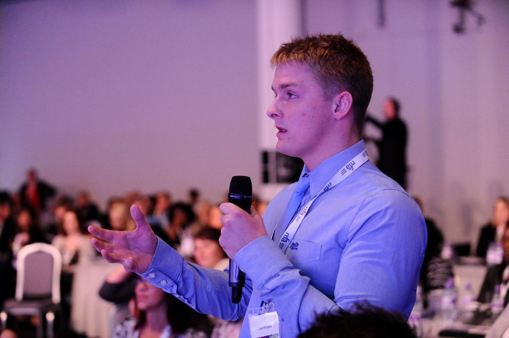

The first keynote
At 19, Luke was asked to speak to children in care at a National Fostering Agency event about fruit and veg. A young person asked him to talk about care instead.
The NFA’s chief executive asked him to say it again at their national conference.
1 of 15